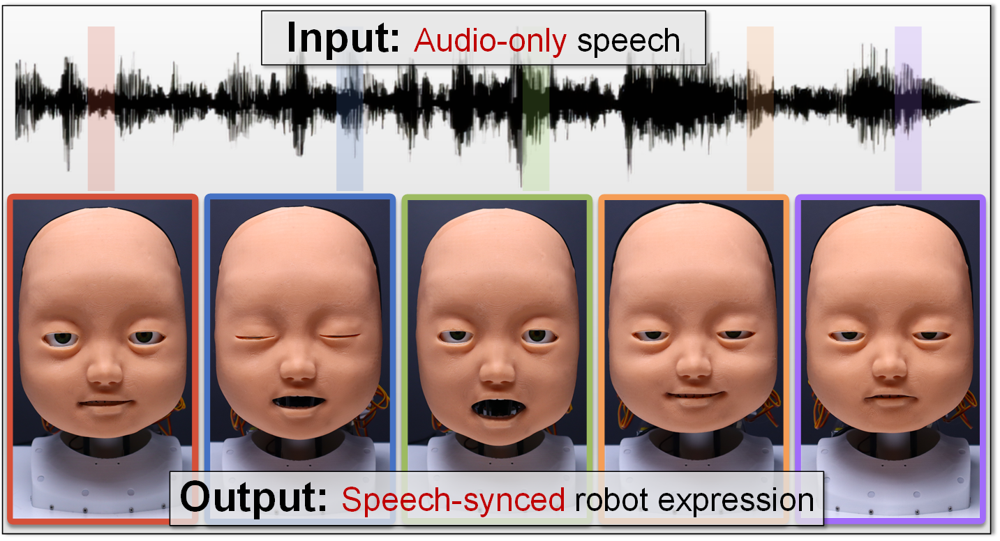

Expressive speech-driven facial dynamics achieved by the developed animatronic robot face. The figure showcases the realism and diversity of the generated robot facial expressions, synchronized with the corresponding speech input over time.
The proposed approach for creating a speech-driven animatronic robot face using LBS. The approach comprises three major components: (1) skinning-oriented robot development designs and constructs the animatronic face paired with a kinematics simulator based on the target skinning appearance, (2) skinning motion imitation learning involves learning an LBS-based model from 3D human demonstrations to generate facial motions from speech, and (3) speech-driven robot orchestration generates animatronic facial expressions during inference by utilizing the developed platform, simulator, and learned model.
The proposed skinning-oriented robot design. The figure comprises two primary components: (1) LBS-oriented kinematics design to achieve actuation topology for the facial muscular system that matches the designed LBS motion space and references facial anatomy, and (2) electro-mechanical design and development accounting for physical constraints of the embodiment, including key mechanical components of the skin, skeleton and muscular system, as well as the electrical control system.

The proposed speech-driven facial skinning motion imitation learning method. The model (blue block) is trained through the train branch (red block) to generate blendshape coefficients from input speech by imitating human facial skinning motions. During inference (orange block), the model predicts blendshape coefficients, which are further decoded by the robot LBS decoder to generate robot facial skinning motions as reference signals for the kinematics simulator.
Motion Space Validation. Actuated blendshape error for different facial regions (left figure): Color-coded skinning landmarks represent different facial regions for evaluation. MSE error distributions between simulated and physically actuated blendshapes are presented using violin plots, box and whisker plots, and scattered points, with each point representing one blendshape. Blendshapes are grouped by facial region, and only landmarks in the corresponding region are used for evaluation. Median errors are 2.41mm (eye), 3.27mm (brow), 1.76mm (nose), 4.01mm (cheek), 3.76mm (mouth), and 8.63mm (jaw). Qualitative comparison (right figure): Eight comparisons between simulated and actuated blendshapes are shown. Blendshapes (1)-(6) demonstrate high accuracy, while (7) mouth close and (8) jaw open highlight limitations in the current design, exhibiting maximum errors for their respective regions.
Tracking Performance Validation. MSE error distributions between simulated and physically actuated facial articulation sequences are presented using violin plots, box and whisker plots, and scattered points, with each point representing one frame. Evaluation landmarks are grouped by facial region. Ten realistic facial articulation sequences from different speakers with distinct speaking styles were evaluated. Mean median errors across the ten sequences for each facial region are 2.56mm (eye), 3.39mm (brow), 1.74mm (nose), 3.08mm (cheek), 3.86mm (mouth), and 5.03mm (jaw). The results demonstrate that the animatronic robot face achieves accurate tracking performance across various facial regions and speaking styles.